Explore
Approved application · approved logoEvery image below is an actual canonical PNG. Open an image for its full resolution. These are authored design scenes, not current-app browser captures.
Find the thread. See the evidence.
explore-evidenceActions and implementation pointers
+ New page · Journal · Explore · All pages · ⌄ · Reflections · › · Reading · Unlinked notes ⌄ · Newest first ⌄ · List · Graph · Space before plans · Open thread · Ask Journl · Today’s Journal · Close · Instant · Thinking · ✓ Unlinked notes · All notes · ✓ Newest first · Oldest first
apps/web/src/app/(app)/explore/_components/explore-overview.tsxapps/web/src/app/(app)/explore/_components/cluster-items.tsxapps/web/src/app/(app)/explore/_components/source-contexts.tsx

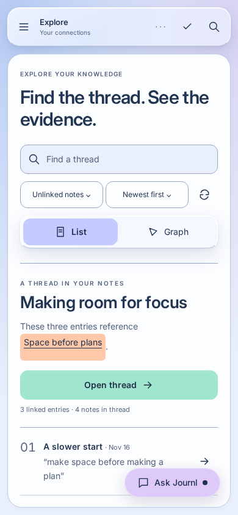
SHA256 6c44202dfb29f09df74174f288c233159e3a95a28aad6e355314ad50d30a4e27

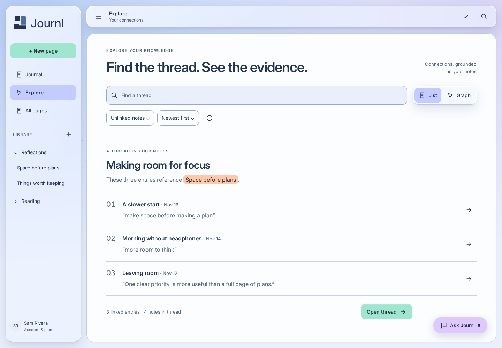
SHA256 1b286afad5123c1009c52b098d5954a9b7db5c439bcd3a13ab4772a416e15fb0

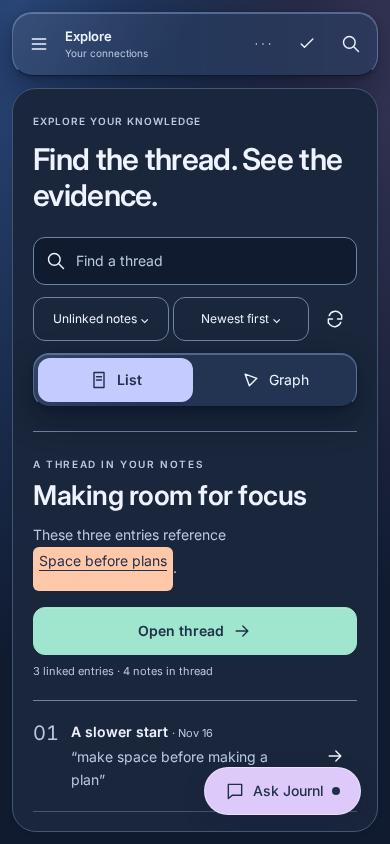
SHA256 e9cacad7cb9befa17d179b616bcaf50d0416dce366da85a762d522f2541583ec

SHA256 426aebc311ce8375bf908772c4292e596e695c738acdd483cb3bbe88b37d3aa0

SHA256 86804ffbb607364508e212f5f254270f42072485c0e92c60441c52ee3eefaa60

SHA256 78612a623b22b888065957944fa503160a7756035b1bd28d8dd60c8d4e75cc10

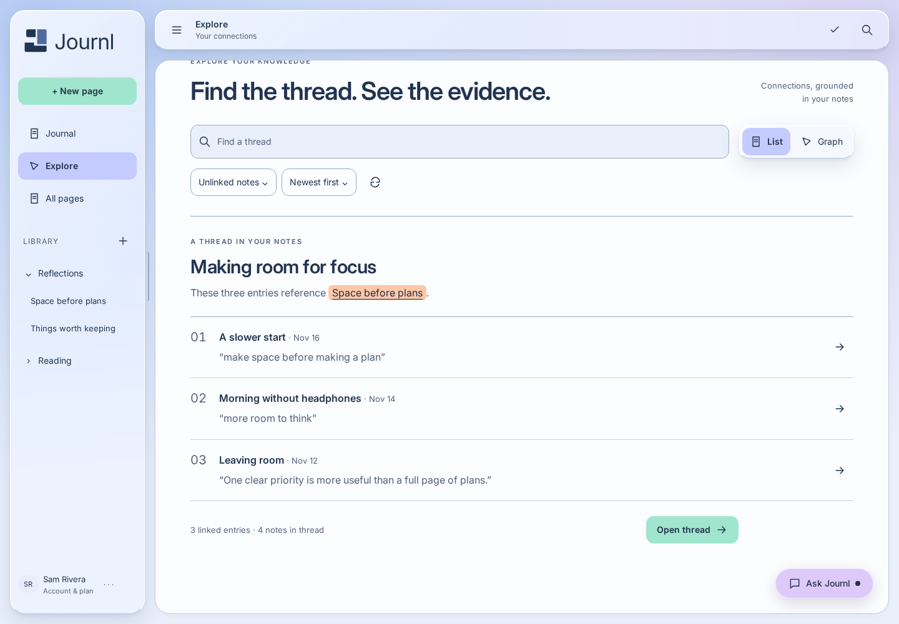
SHA256 7a1aecfbd41285ce68272754a39b0b52a17e938468dbcc8405e71689d3e1fc00

SHA256 bf988da4f7780c7322c44e19954dda36777d6f23b044a8005126231dd16f28ea
Making room for focus
thread-detailActions and implementation pointers
+ New page · Journal · Explore · All pages · ⌄ · Reflections · › · Reading · Rename thread · Notes · Sources · Connections · Ask Journl · Today’s Journal · Close · Instant · Thinking · ✓ Unlinked notes · All notes · ✓ Newest first · Oldest first
apps/web/src/app/(app)/explore/_components/explore-overview.tsxapps/web/src/app/(app)/explore/_components/cluster-items.tsxapps/web/src/app/(app)/explore/_components/source-contexts.tsx

SHA256 cea19dcf59264a0012f875cd655e9170f2ca7f320560c2d40aeaf8f83fba7424

SHA256 dde4045c57ab708d31c72f89893d6cd2d89f7794ae4fa921d8a6e9e343bd089b

SHA256 47e382947d7222c5cb12b887d0ab84884040d9a28b83c831cb5a096d486a90bd

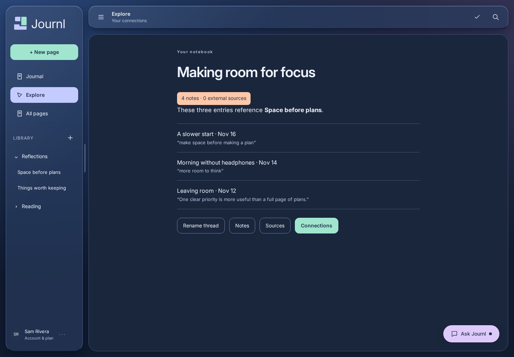
SHA256 5c68d7cfaa791005d3b37b3562ea1e0859348d2017014510916f48160a3d0c85

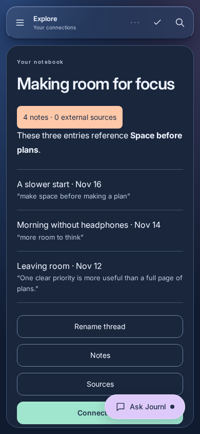
SHA256 58ad24891adcf18ecd3f00d67239134f3f5b28d2865e8f7d05d7676936f0bfd5

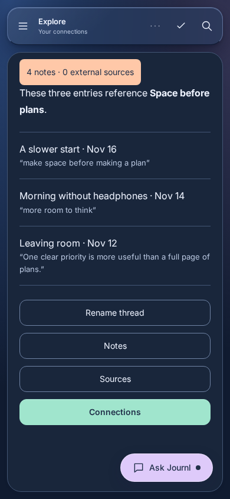
SHA256 36fea02a21360b41736eec7222baf2490ab289815beeaa4faeefd76deff34a57
Why this source was saved
source-contextActions and implementation pointers
+ New page · Journal · Explore · All pages · ⌄ · Reflections · › · Reading · Open source · Open note · Next passage · Ask Journl · Today’s Journal · Close · Instant · Thinking · ✓ Unlinked notes · All notes · ✓ Newest first · Oldest first
apps/web/src/app/(app)/explore/_components/explore-overview.tsxapps/web/src/app/(app)/explore/_components/cluster-items.tsxapps/web/src/app/(app)/explore/_components/source-contexts.tsx

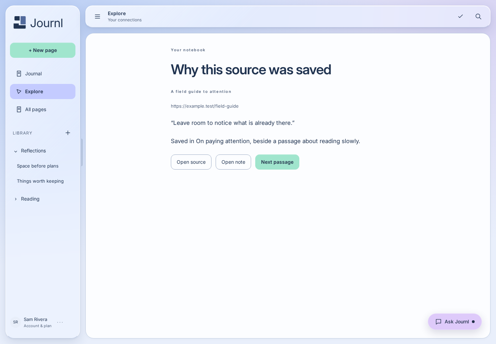
SHA256 d90901924dd45191942616a2c7f34aeac8a93d102634c641e2be670606d462bb

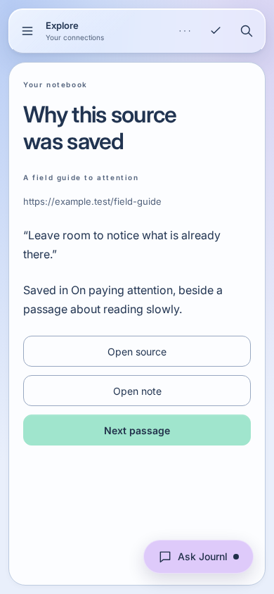
SHA256 519c94cdd12ee7070a37873843261e699c89627aad6d91b0220f06720b5df82f

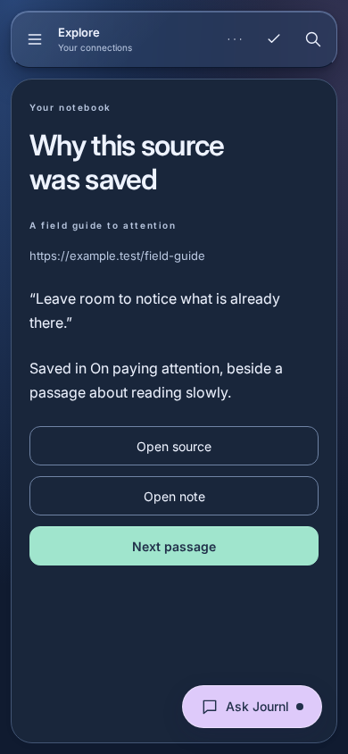
SHA256 f306fffd557b50c1a35e529a21f7e3338d7d04258d509e8ca303f18a733635b6

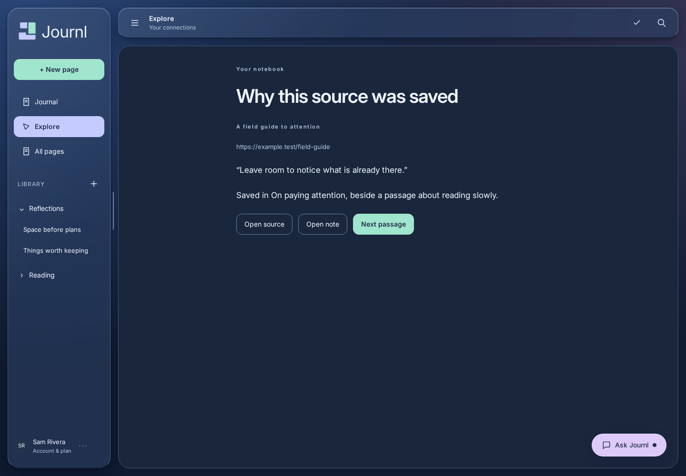
SHA256 9485a3b5aee3e30378d54c2b4b284f1a367561b425bf19b6b1df49a3819ffd48
Morning without headphones
note-contextActions and implementation pointers
+ New page · Journal · Explore · All pages · ⌄ · Reflections · › · Reading · Open original · Explore connections · Ask Journl · Today’s Journal · Close · Instant · Thinking · ✓ Unlinked notes · All notes · ✓ Newest first · Oldest first
apps/web/src/app/(app)/explore/_components/explore-overview.tsxapps/web/src/app/(app)/explore/_components/cluster-items.tsxapps/web/src/app/(app)/explore/_components/source-contexts.tsx

SHA256 31069fb3b46c9ffdb661e572853f02f7f4f02e86e4e8151a04a4db2b0bf7ae1d

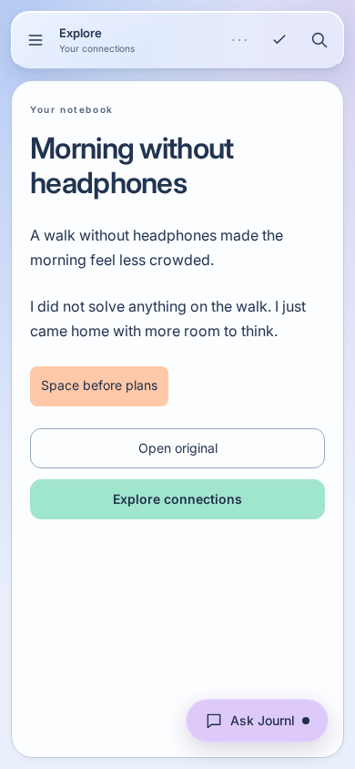
SHA256 07f56383b9f275e9fad683bd543c6b0b4f0522ac057d861a19aa6045cb156cc6

SHA256 bf5c2dae383be603f0c785e43c1aa127f0786cab1ea270efb7dc2c6fa71f2ad7

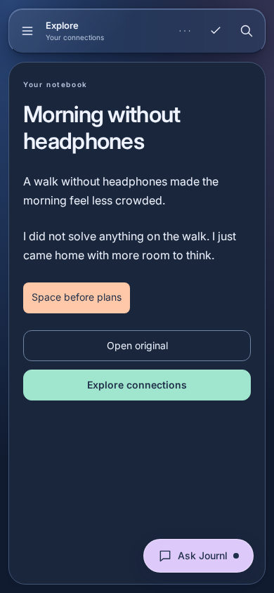
SHA256 899b711619ff25ab355b9556e87def4ddf4b0ae3cdb8344179aae7451f45600f
Connections, in view
graph-viewActions and implementation pointers
+ New page · Journal · Explore · All pages · ⌄ · Reflections · › · Reading · Threads · Zoom in · Zoom out · Fit view · Open original · Close preview · Ask Journl · Today’s Journal · Close · Instant · Thinking · ✓ Unlinked notes · All notes · ✓ Newest first · Oldest first
apps/web/src/app/(app)/explore/_components/explore-overview.tsxapps/web/src/app/(app)/explore/_components/cluster-items.tsxapps/web/src/app/(app)/explore/_components/source-contexts.tsxapps/web/src/app/(app)/graph/_components/graph-explorer.tsx

SHA256 47c4a66faad9326ca4c939053ab2cc19ae87ff4b1ba649ee34077d41b5c90e14

SHA256 bd68ae727669f07ef963a945254276b8e6ff00449eaedb3fefab117b43c6a7d3

SHA256 8cb29d52f3e32b19bc72d5b6b56fccc774a70939d1a4813ce7dd2438ab1607d5

SHA256 c743811b5f58d5bf58c764e5da77ed2d0b54b31a2767e5967801b690d33aea5a

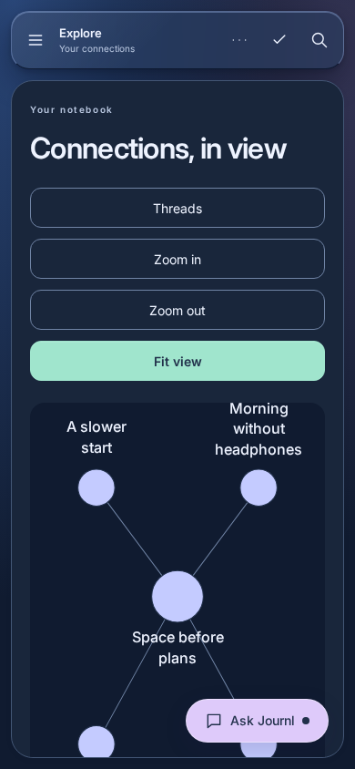
SHA256 7b9c6f92e3d4ff9a38f5fdd322b88a591144c1f6f993e0ae84665641cc860746

SHA256 891fa6cb42e116c64aff5894850bb6eb8bdc080124d2499608a3256b7aae29aa

SHA256 4571b24f4fc8e8b31f4eb428b7ec1dabacd9854bb86f943fd6461dfd9cbdb28d

SHA256 437af43e0f981a56a4891ddebd148343784618c53a5dcd43ef61a9d50ec40750
Threads · initial
threads-initialActions and implementation pointers
+ New page · Journal · Explore · All pages · ⌄ · Reflections · › · Reading · Ask Journl · Today’s Journal · Close · Instant · Thinking · ✓ Unlinked notes · All notes · ✓ Newest first · Oldest first
apps/web/src/app/(app)/explore/_components/explore-overview.tsxapps/web/src/app/(app)/explore/_components/cluster-items.tsxapps/web/src/app/(app)/explore/_components/source-contexts.tsx

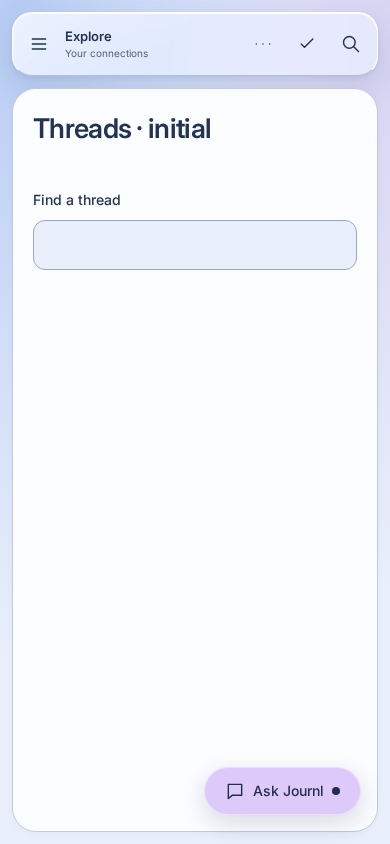
SHA256 c9ccdac2f5a3e52b648847cb2c5a6b7ad7e8559eb48144dd2957c9865d565452

SHA256 4721872a77483f834f9b5be9e7083585045e01de368f400f31656d2e12b43904

SHA256 4b7188b8860e5aca74b2a7cfed006bc311290b92923f88127ef260ec815e7ce7

SHA256 8af0da5bc0fa9ee98da880845962ff349aa95c250c61644801191020aaaebd20
Threads · results
threads-resultsActions and implementation pointers
+ New page · Journal · Explore · All pages · ⌄ · Reflections · › · Reading · Ask Journl · Today’s Journal · Close · Instant · Thinking · ✓ Unlinked notes · All notes · ✓ Newest first · Oldest first
apps/web/src/app/(app)/explore/_components/explore-overview.tsxapps/web/src/app/(app)/explore/_components/cluster-items.tsxapps/web/src/app/(app)/explore/_components/source-contexts.tsx

SHA256 7cbf73ec059112fcfb38f463edaf4385cf42ab847c73e63c82ca47e4bd990abd

SHA256 22a47d0d6dd2b7774ce166de77256b9f32ef647c426ca0eac6a767a76c9bddc1

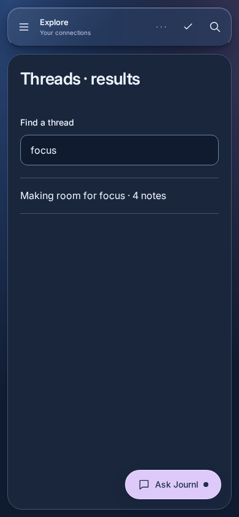
SHA256 6878857d46ddb8507717faec40c11039273d008355cd00fecf8a4b2e2d5e6a96

SHA256 29238c3ea853596456ceb76d86da3cead4f83fa58a663fee5a8f81dc9847d12a
Threads · empty
threads-emptyActions and implementation pointers
+ New page · Journal · Explore · All pages · ⌄ · Reflections · › · Reading · Ask Journl · Today’s Journal · Close · Instant · Thinking · ✓ Unlinked notes · All notes · ✓ Newest first · Oldest first
apps/web/src/app/(app)/explore/_components/explore-overview.tsxapps/web/src/app/(app)/explore/_components/cluster-items.tsxapps/web/src/app/(app)/explore/_components/source-contexts.tsx

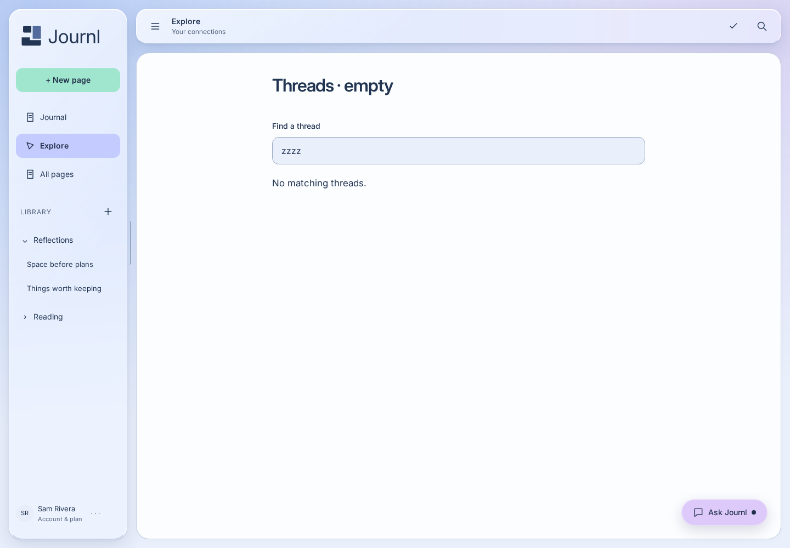
SHA256 f0b39724d6fdebf27c68dab93650c804aae99e1841b5faf18fcaaa57048c5f36

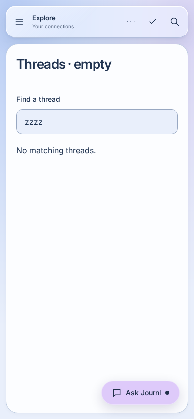
SHA256 49b2c7e7e632f1dbc4e12cb02af607ea19bdc67ff2eedf341d77f07f084f15e8

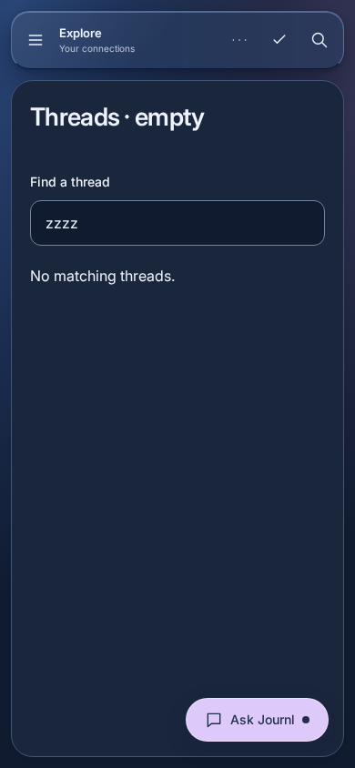
SHA256 26a80eee2b5077bf02762e37a3052adb71ba29416df663e4e7e095ce4e2292a4

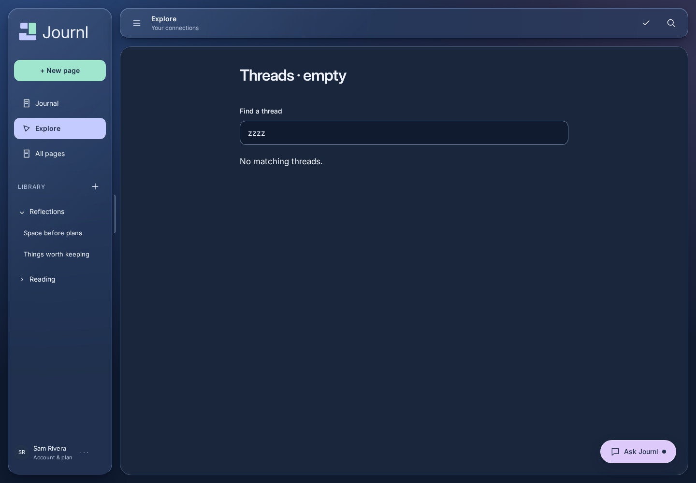
SHA256 65b20f0d893624ee50234d5a359aab4d72dd517afd635d82f9c2f2f74c11715b
Threads · loading
threads-loadingActions and implementation pointers
+ New page · Journal · Explore · All pages · ⌄ · Reflections · › · Reading · Ask Journl · Today’s Journal · Close · Instant · Thinking · ✓ Unlinked notes · All notes · ✓ Newest first · Oldest first
apps/web/src/app/(app)/explore/_components/explore-overview.tsxapps/web/src/app/(app)/explore/_components/cluster-items.tsxapps/web/src/app/(app)/explore/_components/source-contexts.tsx

SHA256 ec348a0eedaa194cfa307f72e0c0c341980b6c47b3dc00983dcc65c544564a49

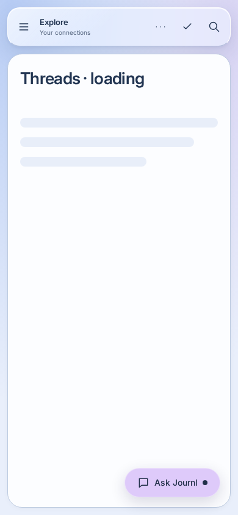
SHA256 62273ccb188d40f7b9e1b654eaf3830dec3d6c8f570f2bc43021ab5d97954491

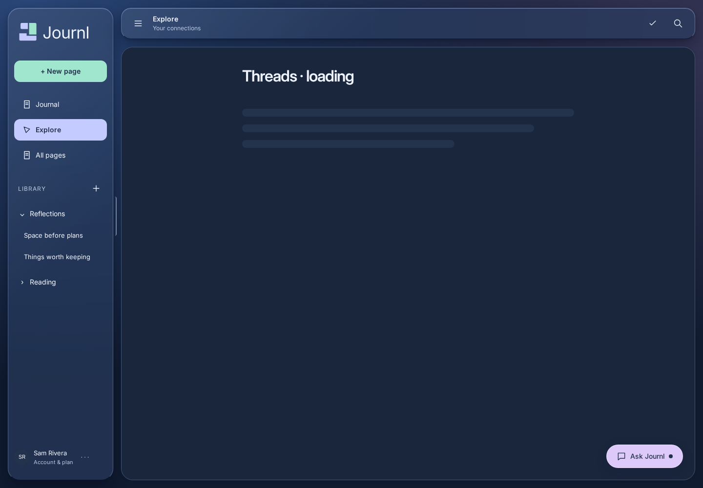
SHA256 58a6c41f80340bcfa51ed2e041f47c3cbf893657adfffbbfe22787bdd2ffc2b3

SHA256 1a6c29696f8722d4207ac062403f7c3ab57fefb8d4ef8eb56147857484bbfeba
Threads · error
threads-errorActions and implementation pointers
+ New page · Journal · Explore · All pages · ⌄ · Reflections · › · Reading · Retry · Ask Journl · Today’s Journal · Close · Instant · Thinking · ✓ Unlinked notes · All notes · ✓ Newest first · Oldest first
apps/web/src/app/(app)/explore/_components/explore-overview.tsxapps/web/src/app/(app)/explore/_components/cluster-items.tsxapps/web/src/app/(app)/explore/_components/source-contexts.tsx

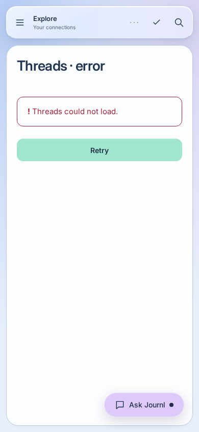
SHA256 6d03b7c12ae09f0af2d895749d114a7ae61babb121c42567162a149e52bad27c

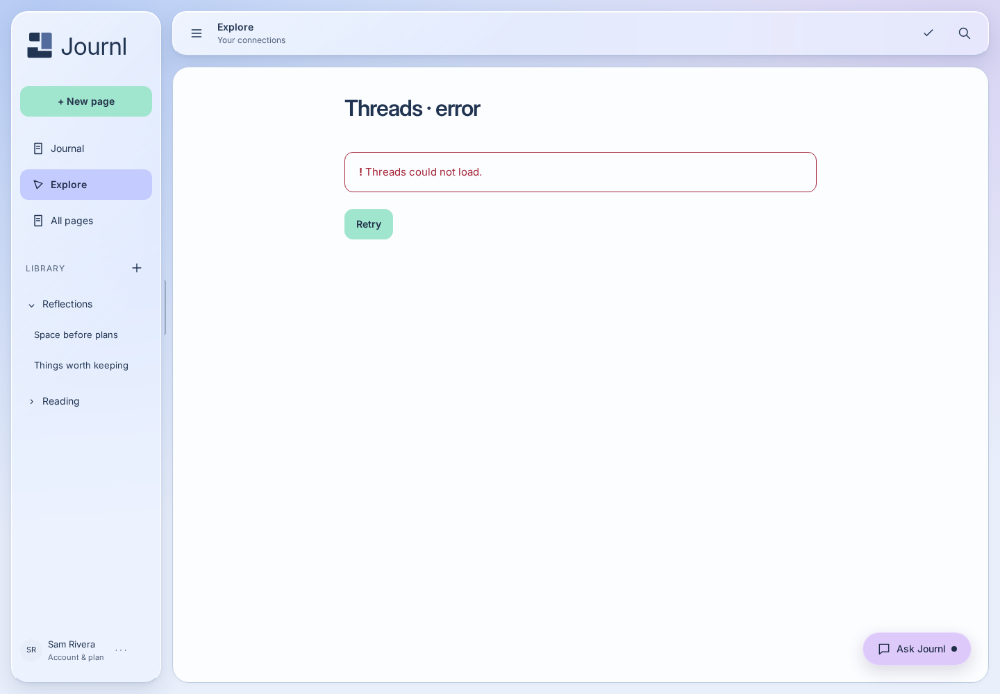
SHA256 201add3f4f449a84c23ffe4473e726d9cb8393e8befd41a6f7588d43756a08cf

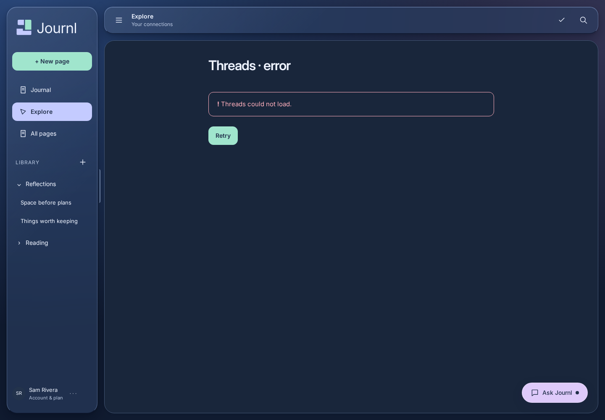
SHA256 03a5daf9143f74b8ed795d491346d4cd0294376509c69b798f389ae9f161b4c3

SHA256 b5e816baf0d4c0f2bacd8190d84841e994ca1384a1ffc53297e71d047277badf